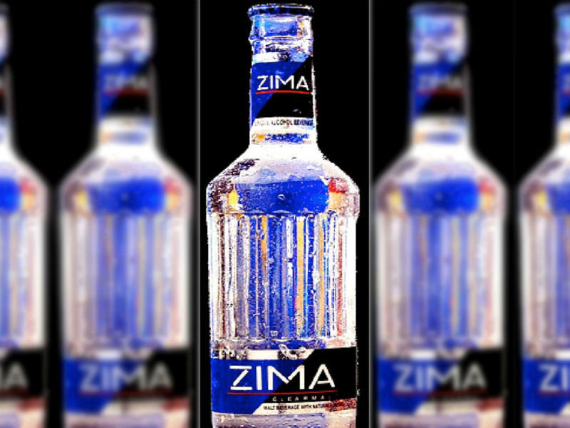

About Us
Welcome to Zima! Zima was a malted beverage created and distributed by Coors that was marketed as an alternative to beer. It was generally citrus flavored and was about as boozy as a standard beer, with an ABV of less than 5%. Upon first launch, it was quite successful. Zima, which means “winter” in Slavic languages, was marketed using the tagline “Zomething Different” (which, if you ask me, is zort of ztupid). Most crucially, Zima was clear—or, at least, clear-ish. This supposed purity was an aspect of the marketing hook, and made it part of the so-called “clear craze,” (a Wikipedia page that’s very much worth the visit) that includes beverages like Crystal Pepsi as well as hardware like GameBoys and computer monitors. The ‘90s were a crazy time.
